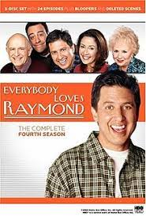
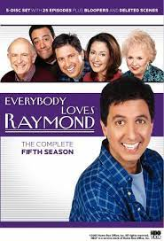

les épisodes
Saison 1

- 1. De l'air
- 2. Est-ce-que tu m'aimes ?
- 3. Pauvre Gus
- 4. Le test
- 5. Regarde mais ne touche pas
- 6. A vos plumes
- 7. Scène de ménage
- 8. La belle-famille
- 9. Père, impair et passe
- 10. Dindon ou poisson
- 11. Le capitaine
- 12. La balle
- 13. La grippe
- 14. Le plus beau des deux
- 15. La vieille voiture
- 16. Une Saint-Valentin agitée
- 17. Jeux à satiété
- 18. Le meilleur journaliste sportif de l'année
- 19. Un chien dans la maison
- 20. Chers voisins
- 21. Vous avez dit bizarre ?
- 22. Leur plus grosse erreur
Saison 2

- 1. Première expérience
- 2. L'école des parents
- 3. Mon frère, ce grand sentimental
- 4. La leçon de piano
- 5. Du green contre les bleus
- 6. L'anniversaire de mariage
- 7. Travail à domicile
- 8. Le livre pour enfant
- 9. Le cadeau
- 10. Réunion d'anciens élèves
- 11. La lettre
- 12. Je ne veux pas que ça pour Noël
- 13. La guerre de Sécession
- 14. Mia famiglia
- 15. Les boulettes de Marie
- 16. Carnet de chèque
- 17. Ronde de nuit
- 18. Pauvre Robert
- 19. Le goûter
- 20. Le code de bonne conduite
- 21. Tout ça pour un centimètre
- 22. Vide grenier
- 23. Le mariage (1/2)
- 24. Le mariage (2/2)
Saison 3

- 1. Invasion
- 2. Conduite dangereuse
- 3. La Baby-sitter
- 4. La Vengeance est un plat qui se mange froid
- 5. La Visite
- 6. Les Friandises d'Halloween
- 7. Le Déménagement
- 8. L'Article
- 9. Vive le célibat
- 10. Régime sans graisse
- 11. L'Appartement
- 12. Le Grille-pain
- 13. Ping-pong
- 14. Péché de jeunesse
- 15. Quiproquos
- 16. L'Hommage à Frank
- 17. La Croisière avec Marie
- 18. Même pas peur
- 19. Mon frère n'est pas n'importe qui
- 20. Bouge de là!
- 21. Une Charmante escapade
- 22. Les Femmes au travail
- 23. Gentils, gentils
- 24. Et bien dansez maintenant
- 25. Retour au bercail
- 26. Histoire d'une rencontre
Saison 4
{kind=link}
- 1. Chirurgie plastique
- 2. Un Nouvel ouvre-boîte
- 3. On parie
- 4. Questions indiscrètes
- 5. Recherche tueur désespèrement
- 6. Ma soeur
- 7. Cousin Gérard
- 8. Debra est en pleine forme
- 9. Tel est pris qui croyait prendre
- 10. Le Syndrome de la maternelle
- 11. Photo de famille
- 12. Un Gay chez les Barone
- 13. Rimes en stock
- 14. Le fils prodigue
- 15. Robert l'as du rodéo
- 16. Dix ans de bonheur
- 17. Hackidu
- 18. Debra devient Cordon bleu
- 19. Les Nouveaux amis
- 20. Enfin seule
- 21. Agréable souffrance
- 22. Sales périodes
- 23. Quand Robert rencontre Nestor
- 24. Histoire d'un divorce
Saison 5
{kind=link}
- 1. Le Voyage en Italie (1/2)
- 2. Le Voyage en Italie (2/2)
- 3. Tout ça pour ça
- 4. Faits l'un pour l'autre
- 5. L'Enterrement du hamster
- 6. Un Auteur incompris
- 7. Le Grand regret
- 8. L'Adolescente
- 9. Surprise pour Thanksgiving
- 10. Quand Ray éternue
- 11. Le Cadeau de Noël
- 12. Le Bras de fer
- 13. La Finale de football
- 14. Le Journal intime
- 15. Brisons la routine
- 16. Les Fées
- 17. Stéphania arrive
- 18. Super Aspirateur
- 19. La Boîte à gâteaux
- 20. L'Argent du ménage
- 21. Robert sur la sellette
- 22. L'Oncle préféré
- 23. La Séparation
- 24. Frank repeint la maison
- 25. La Naissance d'Ally
Saison 6

- 1. A qui la faute ?
- 2. Panne de sens
- 3. L'Intrus
- 4. La Bague de mariage
- 5. Quel talent !
- 6. Plus dure sera la chute
- 7. Crise de jalousie
- 8. Ce n'est qu'un jeu
- 9. Une Femme plus âgée
- 10. Raybert
- 11. Le Ballon de l'exploit
- 12. La Lettre de voeux
- 13. Fais ce qu'il te plaît
- 14. Tempête de neige
- 15. Concurrence déloyale
- 16. Le Costume porte-bonheur
- 17. Duo comique
- 18. La Cassette de rupture
- 19. Les Choses de la vie
- 20. Votez Debra
- 21. Appelle-moi maman
- 22. La Loi du silence
- 23. La Guerre des nerfs
- 24. La Première fois
Saison 7

- 1. Les Grands moyens
- 2. La Conseillère conjugale
- 3. Devoirs d'un père - le moindre effort
- 4. Qu'il est gentil le lapin !
- 5. L'Âge de raison
- 6. Robert est dans le besoin
- 7. Chacun sa salle de bain
- 8. Le Petit Monstre
- 9. L'Effroyable vérité
- 10. Les Yeux de l'amour
- 11. C'est l'intention qui compte !
- 12. Grand-père est kleptomane
- 13. Quelqu'un déteste Raymon
- 14. L'union fait la force
- 15. Une discipline d'enfer
- 16. Charité bien ordonnée
- 17. Deux familles se rencontrent
- 18. Un plan diabolique
- 19. Affaire d'état
- 20. Au nom du ciel
- 21. Un problème de belle-mère
- 22. La Valise abandonnée
- 23. Sens de la fête
- 24. Le Mariage de Robert (1/2)
- 25. Le Mariage de Robert (2/2)
Saison 8

- 1. Les Joies du golf
- 2. La Guerre des belles-filles
- 3. L'Ecole de la bie
- 4. Le Consul de trop
- 5. Le Prix de l'amitié
- 6. Monsieur pot de colle
- 7. Mensonges et conséquences
- 8. Surprise ratée
- 9. Affrontement à Thanksgiving
- 10. Vive la nouvelle technologie
- 11. Une femme au club
- 12. L'Esclave
- 13. Choisis ton camps
- 14. Le Pacte
- 15. La Robe de soirée
- 16. Hésitations
- 17. Remerciements
- 18. Un tic incontrôlable
- 19. Conversation
- 20. Les Ragots
- 21. Le Mannequin
- 22. Le Mentor
- 23. Qui gardera maman ?
Saison 9

- 1. A 85 minutes du bonheur
- 2. Retour à l'envoyeur
- 3. Abus de pouvoir
- 4. Provocations
- 5. Questions de math
- 6. Thérapie de groupe
- 7. Les Parents de Debra
- 8. Un job à tout prix
- 9. Les Entremetteurs
- 10. A charge de revanche
- 11. Le Faux pas
- 12. Un manque de goût
- 13. La Belle-soeur
- 14. Le Pouvoir de dire non
- 15. Nuit gravement à la santé
- 16. La fin justifie les moyens